Case study · Learning experience design
Pixel Smiley Lab
A three-stage interactive lab that makes image resolution something students feel, practice and apply, instead of a formula they memorize and forget. Built for an introductory Photoshop course at a community college.
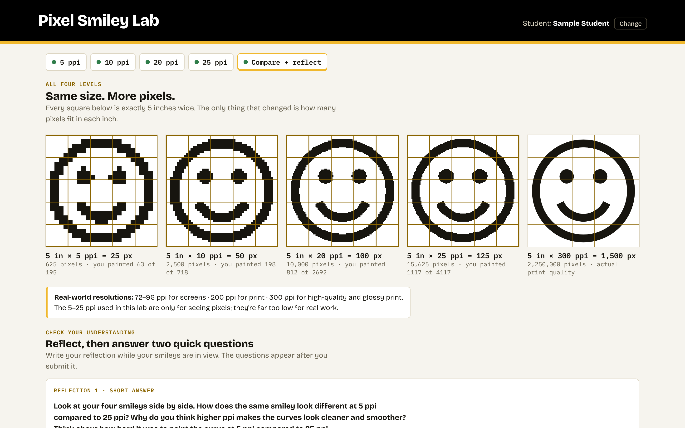
01
Problem
Resolution and resampling are the first technical concepts in the course, and the ones students struggle with longest. Watching the math solved on a slide wasn't building understanding.
- The concept is abstract. "Pixels per inch" means nothing until you see that a pixel has no fixed size. Students could recite the formula and still not know when to check Resample in Photoshop.
- Mistakes are costly later. Students pulled free stock images straight into layouts without checking dimensions. Files ballooned, and some uploads to Canvas took 20+ minutes.
- Existing feedback came too late. The Canvas quiz only revealed right and wrong answers after submission, so students practiced misconceptions for a full attempt.
- Assessment tooling fought the content. Fill-in-the-blank questions marked "42 in" wrong when the answer was 42, so the quiz punished formatting, not understanding.
Design challenge
How might students build an intuition for resolution, practice the math with immediate, specific feedback, and apply it in Photoshop, without adding grading work for one instructor teaching two sections?
02
My role
I owned the experience end to end, from learning objectives to classroom testing.
- Learning design: objectives, sequencing, practice items, feedback copy and reflection prompts
- Interaction and UX design: the painting mechanic, the Image Size simulation, the progressive-disclosure worksheet and the completion certificate
- Assessment strategy: a low-grading-overhead model built around a downloadable certificate graded complete/incomplete
- Research and iteration: classroom observation, student reflections and in-class debriefs across in-person and online sections
- Production: built as a static web app with AI-assisted development; I directed the design, wrote the content and reviewed every iteration
[Placeholder: adjust the production line to describe your build process in your own words.]
03
Process
Five design moves, each prompted by something students did or said.
-
Start with a question students can't answer yet
I open the unit by asking, "What size is a pixel?" The honest answer, "it depends on the resolution," became the premise of the lab. Students paint the same smiley on a 5-inch canvas at four resolutions. At 5 ppi, the curve fights them; at 25 ppi, it almost draws itself.
Key decision: students paint only 25% of each smiley before they can auto-fill the rest. That's enough struggle to feel the difference, without turning a concept lesson into a coloring assignment.
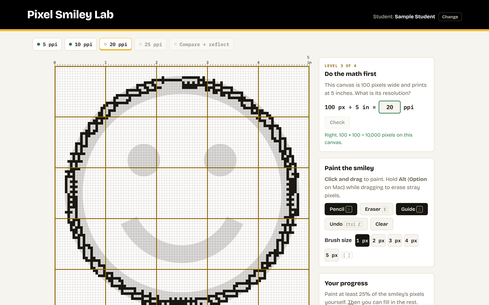
Each level unlocks only after the student solves the resolution equation, so the math and the visual always arrive together. -
Simulate the real tool, safely
Understanding pixels wasn't enough; students had to transfer it to Photoshop's Image Size dialog. I designed a working replica with six guided scenarios, including an "enlarge trap" that shows resampling up adds pixels but never detail, and a real-world case built from the oversized stock images students actually used.
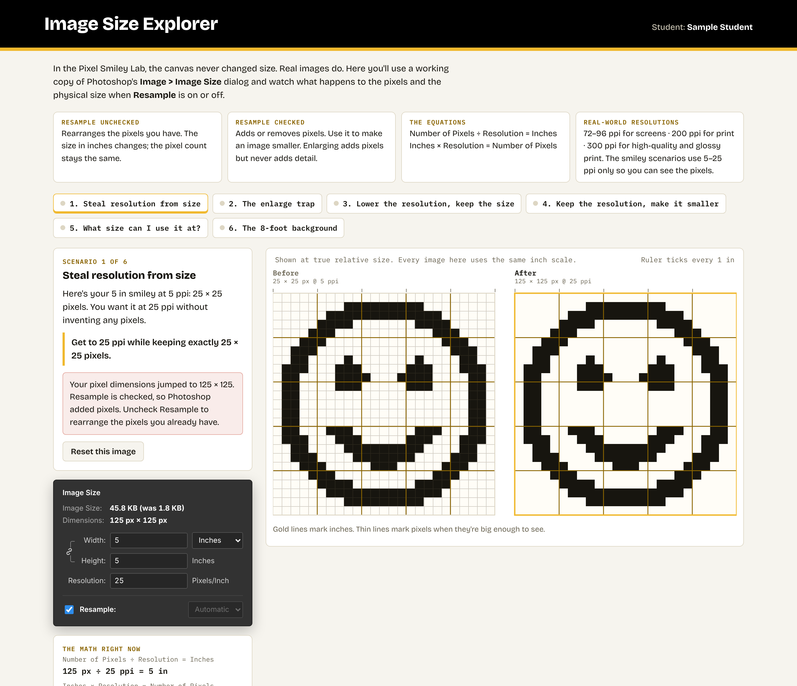
A wrong move in the simulator produces a specific explanation, not just "incorrect," and the before/after images are drawn at true relative size. -
Let the evidence kill an idea
Reflections kept saying the same thing: students understood pixel density but still didn't get "resample." My first fix was an analogy, comparing pixels to mosaic tiles. Reviewing it, I saw it framed resolution as spacing, which contradicted what the lab had already taught well: more pixels per inch means smaller pixels.
Key decision: I dropped explanation in favor of action. The lesson now teaches three rules students can apply with the dialog open: set resolution first with Resample off, change size second with Resample on, and never upsample.
-
Learn from the low-tech version
An in-class paper worksheet, where students resized real images and recorded what Photoshop showed them, resolved more confusion than any explanation had. When I asked why, one student summed it up:
"Because I actually had to do it myself, on paper."
Online students needed the same experience. I rebuilt the worksheet as an interactive page that keeps the paper version's table layout but checks every answer as students go.
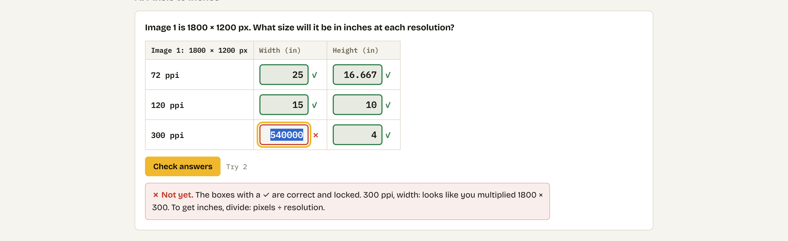
Correct cells lock; the feedback diagnoses the mistake ("looks like you multiplied") instead of just marking it wrong. -
Design the feedback around real mistakes
I catalogued the errors I'd seen students make in class, then wrote a targeted response for each one:
- Multiplying instead of dividing, or dividing in the wrong order (72 ÷ 1800)
- Entering pixels where inches were asked for, or the reverse
- Swapping width and height, or using the wrong row's resolution
- Photoshop set to centimeters or pixels per centimeter
- Resample checked or unchecked on the wrong step, detected from the exact numbers it produces
Key decision: unlimited retries, a hint after two misses, and the answer after three, but students still have to type it to move on. Fields accept only numbers, which ends the "42 in" problem.
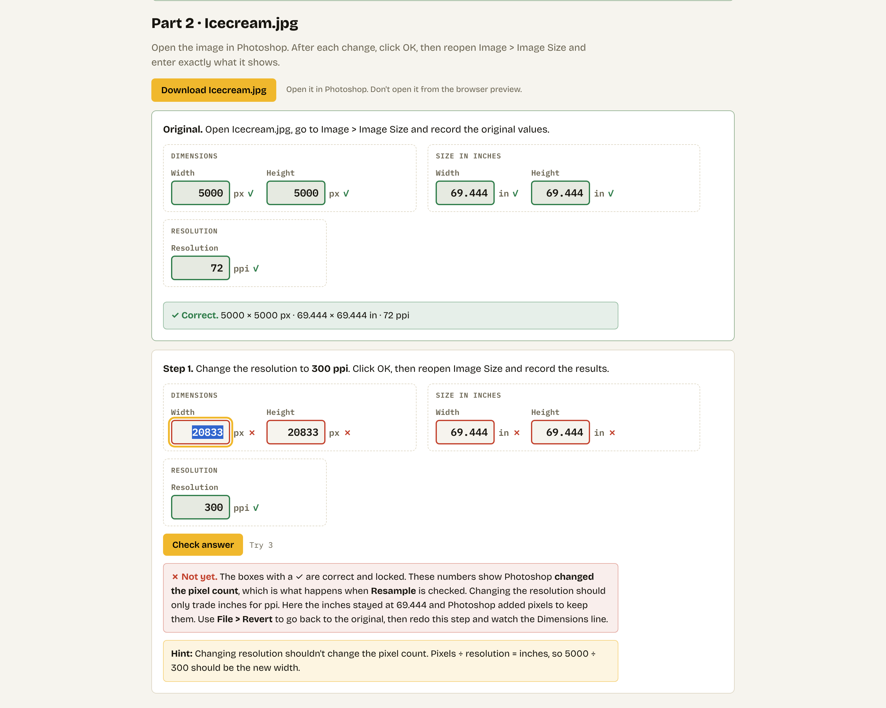
The worksheet never tells students when to resample. It only names the setting after the numbers show they got it wrong.
04
Solution
One link, three stages, one certificate. In-person students do the worksheet on paper and enter a class code; online students and anyone who missed class complete it interactively.
Stage 1
Pixel Smiley Lab: feel it
Solve the equation, paint the smiley, compare all four resolutions side by side, then reflect. Two check-your-understanding questions follow the reflection, so students write before they're quizzed.
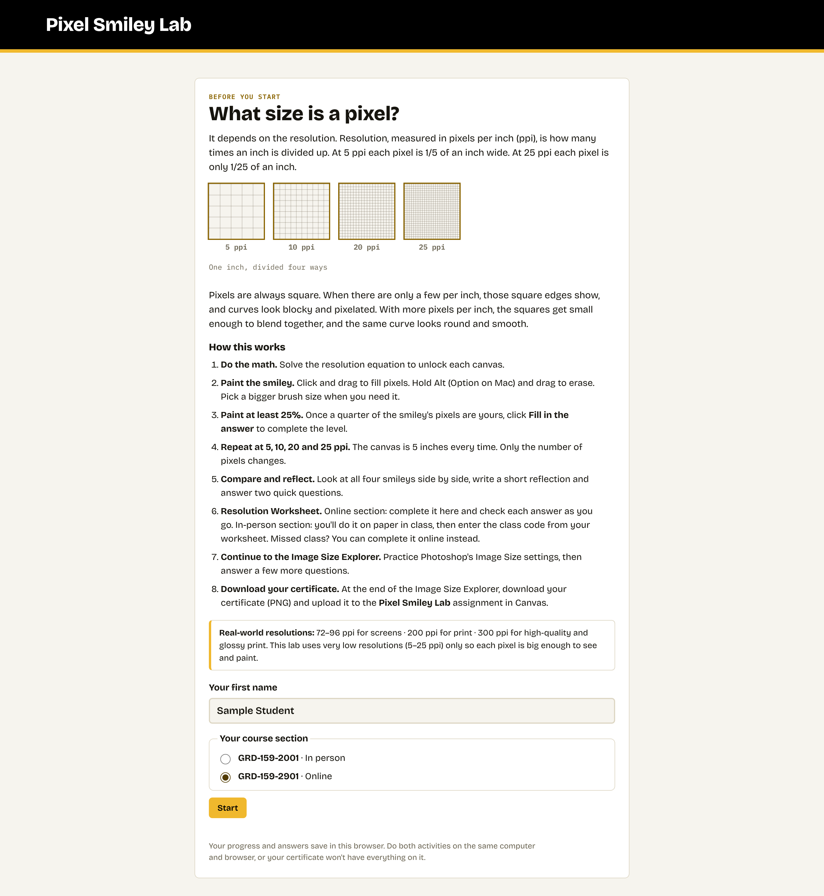
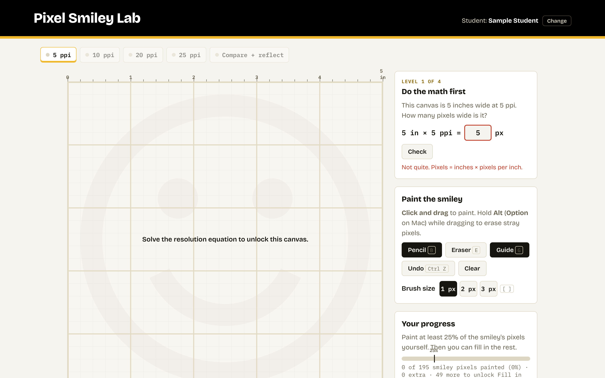
Stage 2
Resolution Worksheet: practice it
Resolution math in tables that mirror the paper version, then three real images resized in Photoshop, ending with a client scenario where the right answer is "this image isn't big enough."
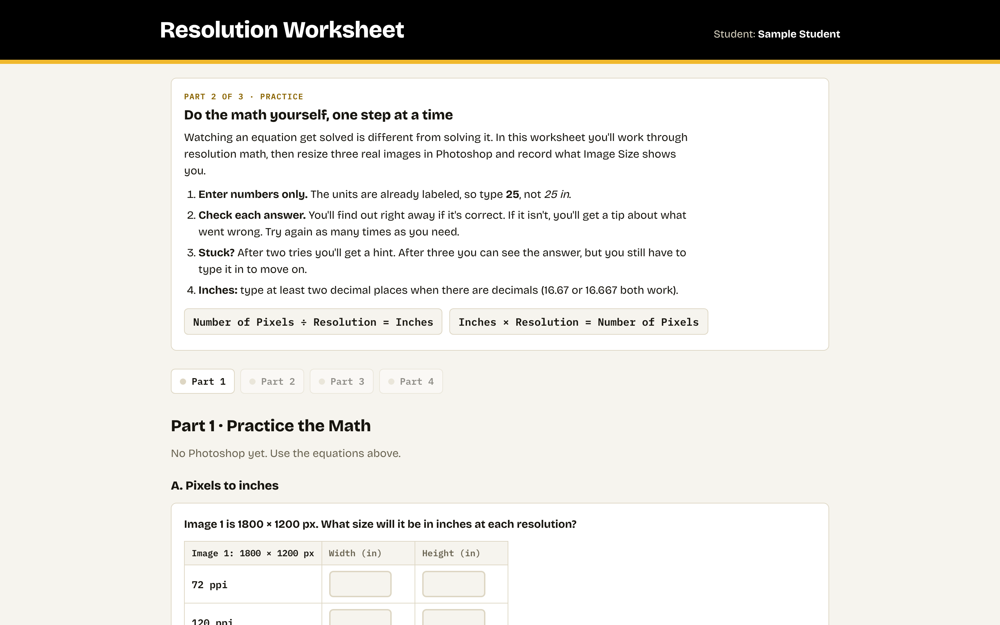
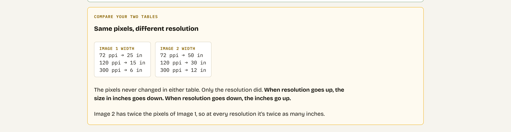
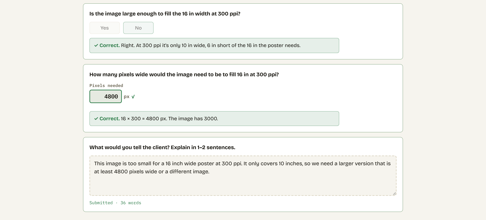
Stage 3
Image Size Explorer: apply it
Six scenarios in a working replica of Photoshop's Image Size dialog. Every image is drawn at true relative size, so students see a resample decision change both the pixels and the physical print.
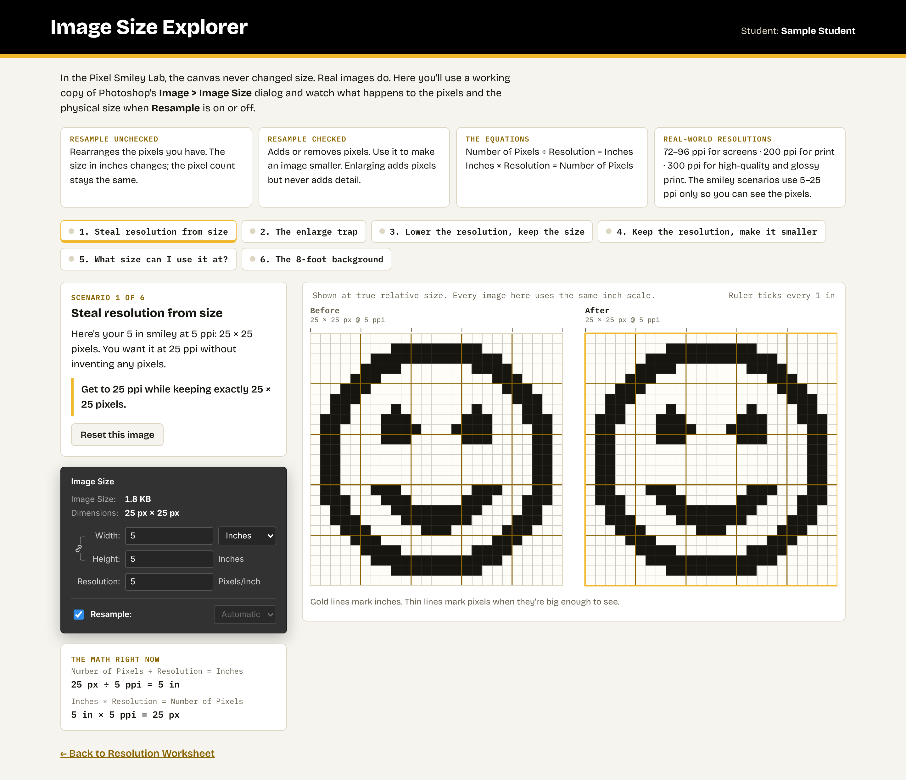
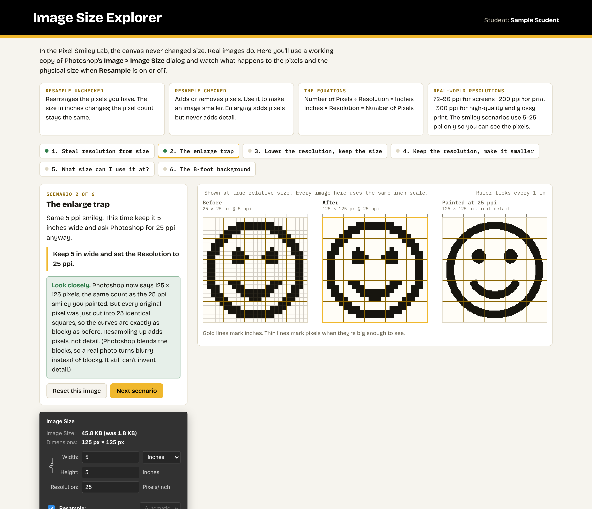
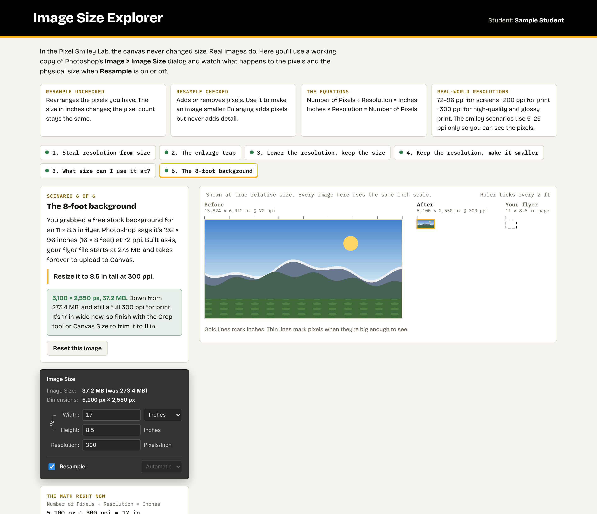
Completion
A certificate instead of a gradebook
Students download one PNG certificate and upload it to Canvas. It shows their painted smileys, every answer, every reflection and their worksheet completion, with a code to discourage editing. Grading is complete/incomplete, and the reflections give me a fast read on where the class is still confused.
The whole experience is responsive, so students can review on a phone, though painting and Photoshop work happen at a computer.
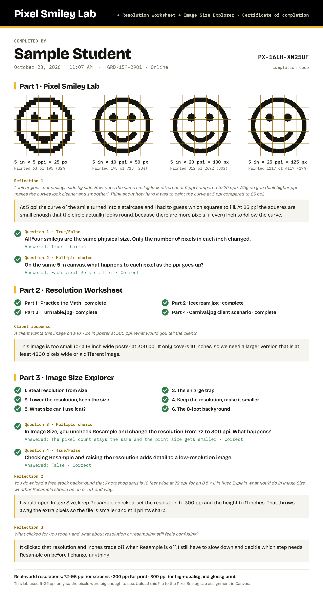
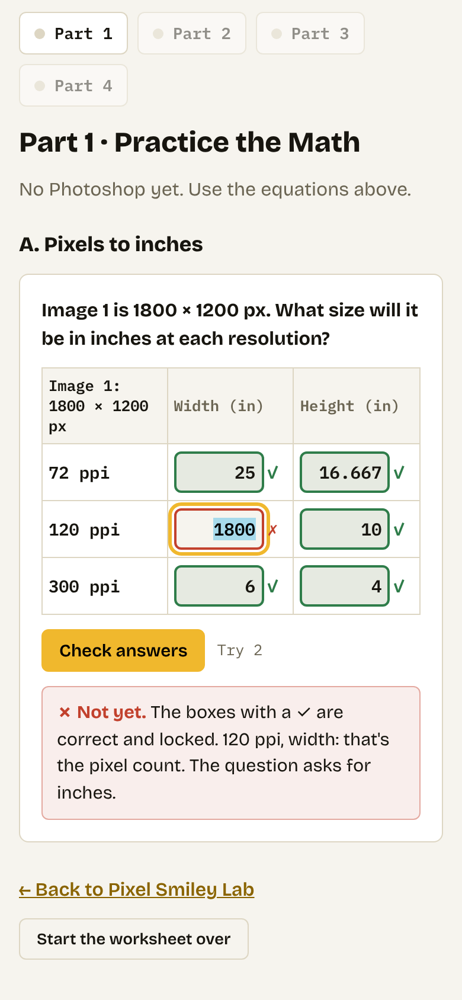
05
Outcome
Early signals are strong; quiz data is coming in now.
- [XX%] Completion rate [Placeholder: students who submitted a certificate ÷ students enrolled]
- [XX%] Error reduction [Placeholder: change in incorrect answers on the Image Sizing quiz versus the previous term]
- [XX fewer] Student questions [Placeholder: resolution and resampling questions per term, before and after]
- Students responded positively. When I asked the class what they thought of the activities, the feedback was strongly positive.
- The answer review was quiet, in a good way. When we went over the worksheet together, almost no wrong answers came up.
- One experience, two modalities. In-person and online students now complete the same activity through one link, and absent students have a path that doesn't depend on catching up in class.
"[Placeholder: anonymized reflection quote about what clicked.]"
"[Placeholder: anonymized reflection quote about resampling or the painting levels.]"
What I'd do next
- Compare this term's Image Sizing quiz results with prior terms to measure error reduction.
- Add more interactive pages to the lab, starting with cropping and canvas size.
- Reuse the diagnostic-feedback pattern in other courses where students practice calculations.